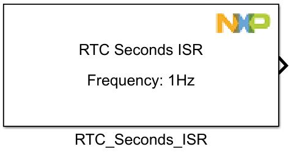
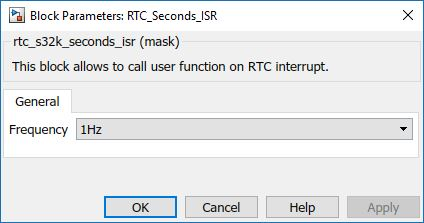

RTC Seconds ISR Block
This block allows to call user function on RTC Seconds interrupt.
Block Image
Inputs:
- None
Outputs:
- Function call
Parameters and Dialog Box
Frequency
- 1Hz
- 2Hz
- 4Hz
- 8Hz
- 16Hz
- 32Hz
- 64Hz
- 128Hz
Block Dependency
Block Miscellaneous Details
- None